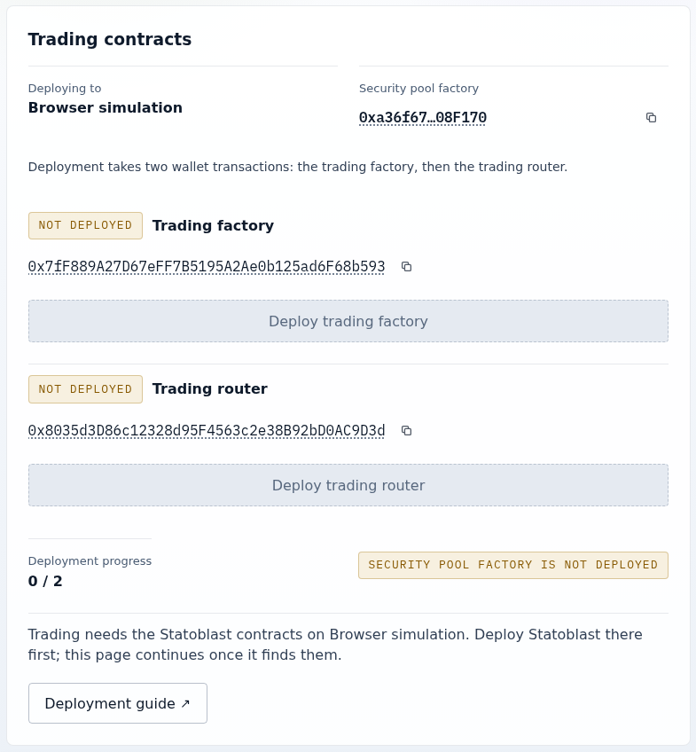

How-to guide
Deploy the Trading contracts
Trading needs one factory and one router at addresses derived from the Statoblast deployment. Use this guide to deploy them from the browser on a network where Statoblast is installed, or with the testnet deployer on a local Anvil node.
Before you start
Confirm reviewed Statoblast core code, including its SecurityPoolFactory, for your selected network and Yes or No universe. Use the matching manifest listed in the deployment status reference; planned addresses do not prove the contracts are live. To install the core on a test network first, follow Deploy testnet contracts.
Deploy from the browser
Serve the Trading UI as Set up Trading development describes, from source or in Docker.
- Open
http://localhost:4163/#/deployand choose the truthful universe if prompted. To use another network or RPC URL, set it under Settings before connecting. - Select Connect wallet. The Trading contracts panel shows the
SecurityPoolFactoryaddress and the status of the Trading factory (TwoWayConstantProductFactory) and Trading router (TwoWayConstantProductRouter). - Select Deploy trading factory and confirm, then select Deploy trading router and confirm. Deployment progress reaches
2 / 2once both contracts and their links are verified. If you leave and return with the same settings, the flow resumes at the first missing contract.

See the factory reference for the fixed trading fee and Your first Trading market to create a pool.
Use local Anvil
The UIs do not offer Ethereum mainnet, so start Anvil with Sepolia's chain ID, 11155111, and use the Sepolia address profile:
bun run anvil -- --chain-id 11155111 --hardfork osaka- Deploy to the node with the testnet deployer, following Deploy locally with
--rpc-url=http://127.0.0.1:8545and an Anvil account's key. It installs the core and the Trading factory and router. Its final explorer-verification step targets public Sepolia, so a failure there does not mean the local deployment failed. - Start the Trading UI as Set up Trading development describes. In Settings, set the Sepolia RPC URL to
http://127.0.0.1:8545. The deploy page reads deployment status through this RPC URL, not through the wallet, even after a wallet connects. - In your wallet, point the chain
11155111network athttp://127.0.0.1:8545and import an Anvil account. The wallet sends the deployment transactions through its own RPC, so a wallet still on public Sepolia would send them to the real network. - Connect the wallet in the running Trading UI and open
#/deploy. Deployment progress shows2 / 2.
Deploy for script and integration tests
The local deployment script deploys independent copies at ordinary CREATE addresses. The UI never finds them, because it looks only at the derived addresses; use them from scripts and integration tests only.
The script needs a node whose chain ID equals the core manifest's, code at that manifest's SecurityPoolFactory, and an unlocked account on the node. For the Sepolia manifest below, complete step 1 of Use local Anvil first.
ZOLTAR_DEPLOYMENT_MANIFEST=docs/sepolia-deployment-addresses.json \
TRADING_RPC_URL=http://127.0.0.1:8545 \
bun run trading:deploy:localFind the deployment addresses in solidity/deployments/trading/local.json. See the manifest reference for the output fields.